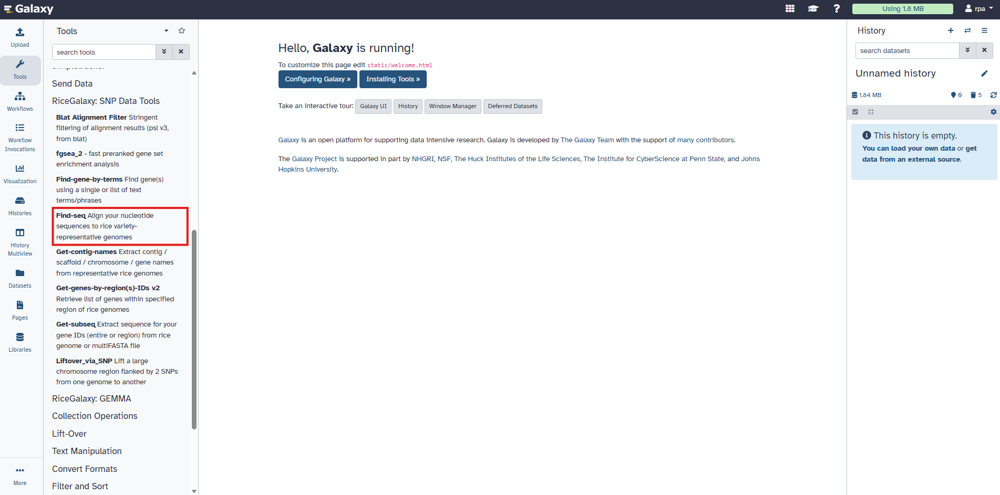
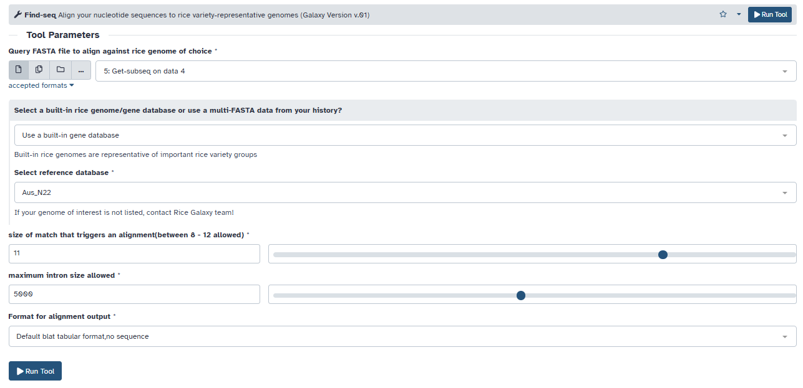
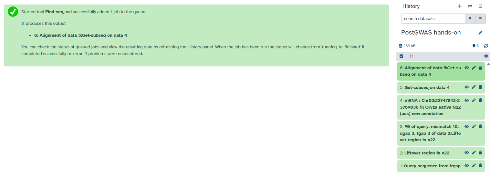
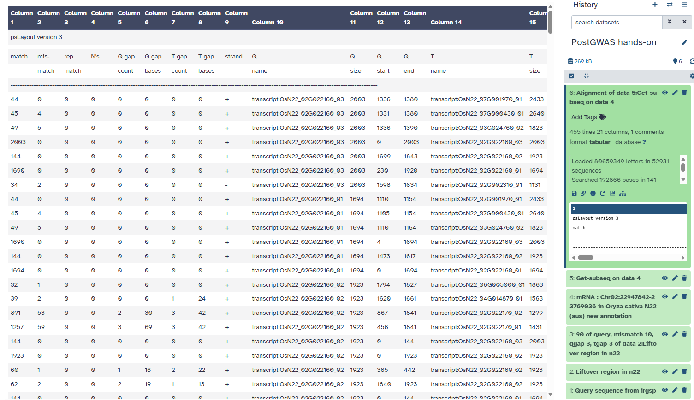
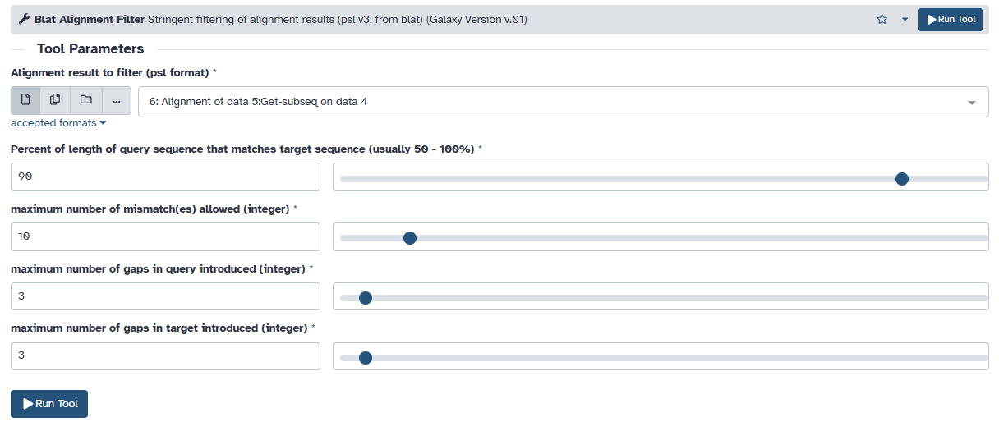
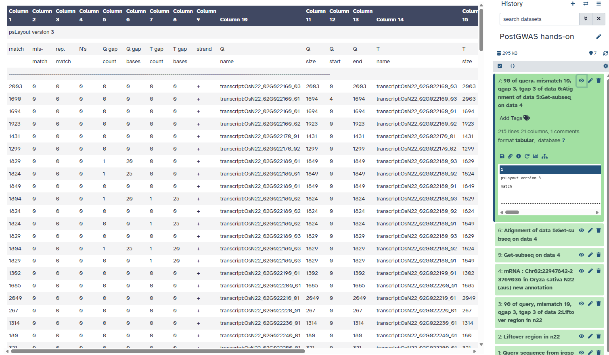

Learn how to identify candidate genes from a genomic region of interest using CropGalaxy and its integrated tools.
We generated a gene list and their sequences anchored on N22, an aus-type genome, for the QTL, qDTF2.2. We did this because our donor is closely related to N22. Our goal now is to use available annotations to learn about the putative functions of the genes in our list. We will now begin another series of analysis.
This tool maps genomic regions from a source genome to a target genome using SNP-guided alignment.



Upon closer look on the output, you will notice that there are a lot of gene duplications and genome rearrangements given the chromosome location of the Nipponbare genes. We will need to filter this using “Blat Alignment Filter”.

We will filter out PSL table to get only those whose sequence matches 90% with the Nipponbare gene sequence.


Extracts gene IDs located within the lifted-over genomic region.
Retrieves nucleotide sequences of candidate genes for downstream functional analysis.